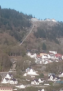
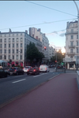

From 29. April to 17. May I travelled together with Peter ↗ Bergen for 2 weeks of work and to France EPIT 2024 ↗ for 1 week of workshop. I thank Peter for planning this trip.
Bergen, Norway
We were invited to Bergen to work with Sushmita Gupta ↗ and meet members of the Algorithms Group ↗.
To get there we flew from Birmingham to Bergen through Copenhagen. From Bergen airport it is easy to get in-city using their Bybanen tram. To stay there I can easily recommend Citybox ↗ that has small rooms without unnecessary boilerplate that is usually included in hotels. Due to bureaucracy reasons I stayed in Moxy ↗ which was very close to the school ↗. I’ve been to Bergen only once before and during that week the weather was nice. This time we were lucky and got some rain just during the workdays. We went sightseeing a bit for the first days there, seeing a curious ship in the distance – just found out it to be a Crane Ship UGLEN ↗.


The space of the uni was nice. The group are seated all next to each other which is great. Close by a coffee machine, printer, ping-pong table, open game of chess, just about everything one may need. Aside from researching we presented at algorithm group’s seminar: I talked about Ordered Level Planarity and Peter talked about Knockout Tournaments.
We spent a day of the weekend in the middle of our stay on Vidden hike ↗ a hike between Ulriken and Fløyen. Along with getting to the cable cart, going up to Ulriken, hiking, going down from Fløyen using a funicular and going home the trip took around 6 hours.

During the second week we managed to go up another mountain near Bergen and took an offroad way back which turned out to be stepper than we anticipated. By the second week of work we reached the end of the Bergen trip. We took a train to Oslo where spent the night and flew the next day to Lyon where our next trip began.
EPIT 2024, Aussois, France
Next was a week of EPIT 2024 workshop in french Alps. After arriving to Lyon we took a train up to Modane, of which the last stretch was substituted with a bus. There we found out that the taxis are in short supply and had to wait with other participants of the workshop about 2 hours so that the taxi can do several runs. The taxi drove us up to Aussois, a village nearby, which seemed to be mainly suited for winter sports and tourists. Our hotel and venue comprised of a main and a secondary building (which contained only extra rooms). We checked in and went for late dinner which waited for us.
The workshop was busy but enjoyable. Some topics were more interesting than others to me. Notably Listing all potential maximal cliques of a graph of Vincent Bouchitté and Ioan Todinca given by Marcin Pilipczuk. The presentation showed how to use this framework to solve Maximal Weighted Independent Set. It consideres treewidth decomposition in a viewpoint of being a subgrpah of chordal graph where every bag is a clique. Over our graph we find Potential Maximal Cliques (PMCs) and design a DP that works over them. Curiously, we can compute the solution even though we do now explicitly know how the tree decomposition looks like. This concept really reminded me of Bellman-Ford approach to finding shortest path as it repeats $|V|-1$ times relaxation of every edge in the graph in order to find the shortest path without explicitly constructing the tree of shortest paths. The argument for why Bellman-Ford works (induction on correct result by distance from the source) is similar to the one used in this algorithm (correct result on nodes by depth of the decomposition subtree trooted in it). The algorithm is slow as it depends on the number of PMCs. A challenge that remains is representing concisely the big number of PMCs to reduce the time complexity. This may be the first time I understood an advanced topic in a workshop quite completely during the talk.
Regarding non-scientific stuff, on the second evening we found 3 bed bugs in our room so we took our stuff and got another one, checking everything we had thoroughly. On the fourth day the program contained a space to do trips in the afternoon so we took a long trip up the mountain the hotel was on. We reached the show line and two lakes that are up there going even slightly further before going back via another route. Overall, programme of the workshop was okay; we met many interesting people that are working with parameterized complexity; the food could have been better; wine on tap was interesting; the venue was fine; and the location was great.

For the return trip we decided to go via train as flight is not much faster and one cannot do stuff. In the afternoon we went to Lyon and stayed one night. Next day the departure was early afternoon so we had time to look around a bit. Then we went for the train to Lille for 3 hours, transferred to 1h30m Eurostar to London, and last, 1h train to Coventry ending our journey.